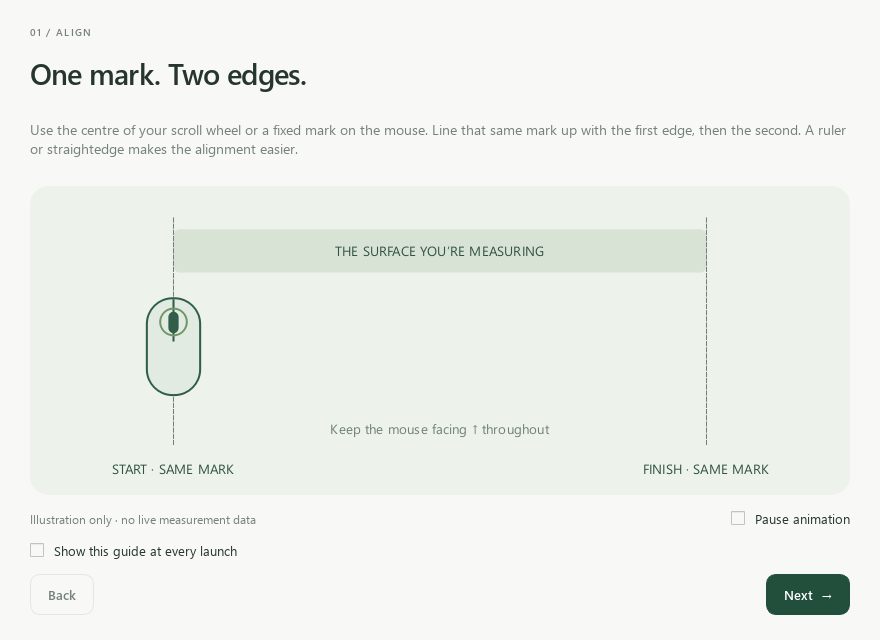

The practical guide
How to measure something without a ruler
If you have a Windows computer, an optical mouse, and know its current DPI, MouseRuler can estimate distance by tracking how far the mouse slides across a flat surface.
This method is useful for quick estimates of a notebook, a desk area, or another flat object when you can keep the sensor on a continuous trackable surface. It does not promise exact dimensions.
What you need
- A Windows 11 x64 computer and an optical mouse.
- The mouse’s current hardware DPI, usually shown in its configuration software. Monitor DPI and Windows pointer speed are different settings.
- A flat surface the sensor can track, with enough support for the mouse throughout the slide.
Measure in four steps
- Download and set up MouseRuler. Extract the Windows ZIP, open MouseRuler.exe, move the mouse you will use, and enter or confirm its DPI.
- Choose one reference mark. Align the centre of the scroll wheel or another fixed mark with the starting edge. Double-left-click to begin.
- Slide without turning. Keep the same heading and keep the sensor touching the surface until your chosen mark lines up with the end edge. Do not lift the mouse to reposition it.
- Finish and read. Double-left-click again. Read the direct endpoint distance in mm, cm, metres, or inches. Travelled path is displayed separately.

How mouse DPI becomes centimetres or inches
At a nominal 1600 DPI, 1600 raw counts correspond to about one inch (25.4 mm). MouseRuler converts raw displacement using millimetres per count = 25.4 / DPI. It combines the net X and Y displacement to calculate direct distance. This is a sensor-based estimate, not a guaranteed accuracy specification.
How to get a more reliable result
- Keep DPI unchanged and use a surface with reliable sensor tracking.
- Keep orientation fixed; a sideways detour is acceptable only while the mouse keeps the same heading.
- Repeat the measurement and check that the readings are consistent.
- If you later have a ruler or another known reference, use optional calibration to refine the scale.
When to use another method
For objects smaller than the mouse footprint, rough or curved surfaces, or paths that require lifting the mouse, another tool may be more practical. You can transfer endpoints onto paper or string and compare them with a reference of known length. Use a proper ruler, tape measure, or caliper when an accurate fit or safety depends on the answer.
What MouseRuler cannot correct
A single optical mouse cannot reconstruct its own rotation or movement while lifted. Raw Input bypasses Windows pointer acceleration but cannot restore motion lost by the mouse sensor or firmware. Physical accuracy across mice and surfaces has not been independently validated.
By vivaswann · MouseRuler 1.4 · Validation and limitations